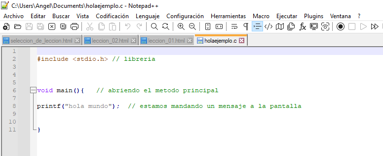
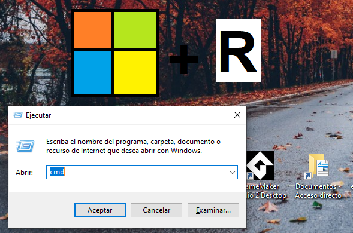
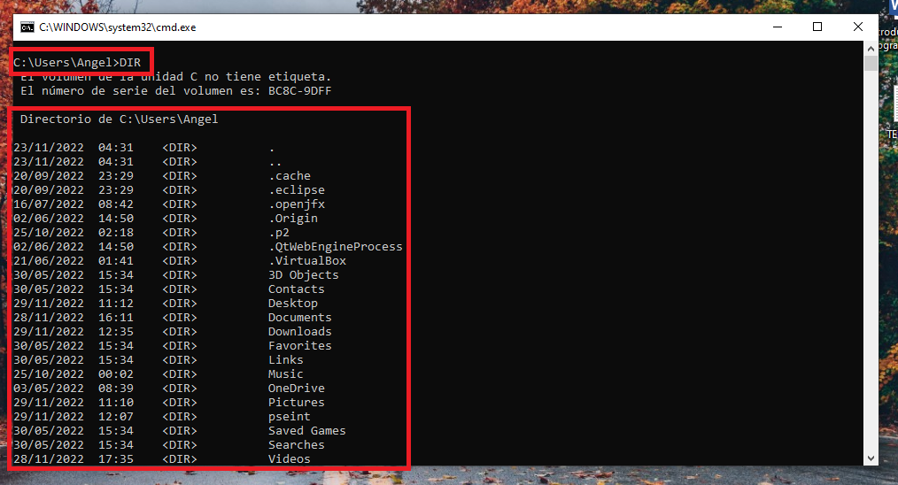
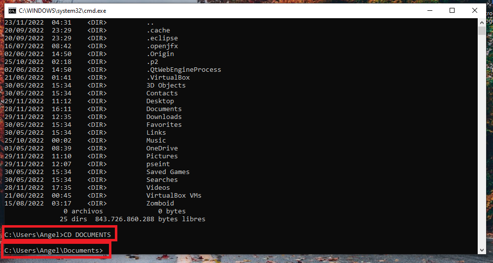

CODIGO UTILIZADO PARA ESTA LECCION

PARA ABRIR LA CONSOLA DE COMANDOS UTILIZA LA TECLA WINDOWS + R.
LUEGO ESCRIBIMOS CMD Y PRESIONAMOS LA TECLA ENTER.

COMANDOS USADOS:
DIR- MOSTRAR UN DIRECTORIO DE ARCHIVOS

CD - ENTRA A UNA CARPETA (SI ESCRIBES CD ../) IRAS A LA CARPETA SUPERIOR A LA QUE TE ENCUENTRAS

EN CASO DE QUE NO PUEDAS COMPILAR LOS ARCHIVOS EN C, SIGUE ESTOS PASOS.